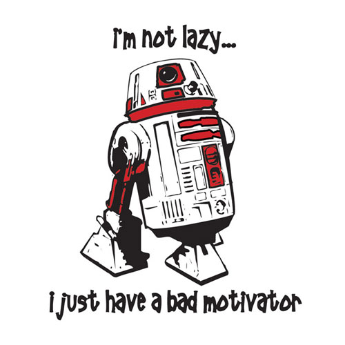

Motivate yourself and others
by Luk Weyens
Today we'll cover
- Steps to find your motivation
- Finding your talents
- How to apply change to ourselves
What is motivation?
Motivation is the reason for people's actions, desires, and needs.-Wikipedia
Motivation is also one's direction to behavior, or what causes a person to want to repeat a behavior.
My motivators
- Urge to improve
- Urge to create
- Urge to do something new
- Urge to distinguish myself
- Urge to grow, and see others grow
What motivates me?
Motivators - helpful questions
- What do you value?
- Is it task-based or result-based?
- Where do you get your energy from?

An eastern approach...
What am I good at?
- What activities do you perform in a state of flow?
- No. Not everyone can do what you can
- You're already using your talents, even though you might not know it
- What do others thank you for?
"Our greatest glory is not in never falling, but in rising every time we fall."-Confucius
Start small and work your way up.
Find ways to integrate what you want to do in your daily life or job
Stay positive
Be thankful
Spend time with people you like
Give
Savor the joyful things
Strive for greatness
Frequency over intensity
"Whether you think you can or think you can't, you're right."-Henry Ford
Further reading
- Daniel Pink - Drive
- Carol Dweck - Mindset
- Teresa Amabile - The Progress Principle
- Linda Rising - Fearless Change
- Daniel Kahnemann - Thinking, Fast and Slow
- Jonathan Haidt - The Righteous Mind
https://weyensluk.github.io/Motivate-yourself-and-others